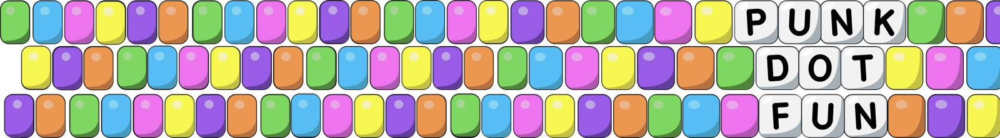
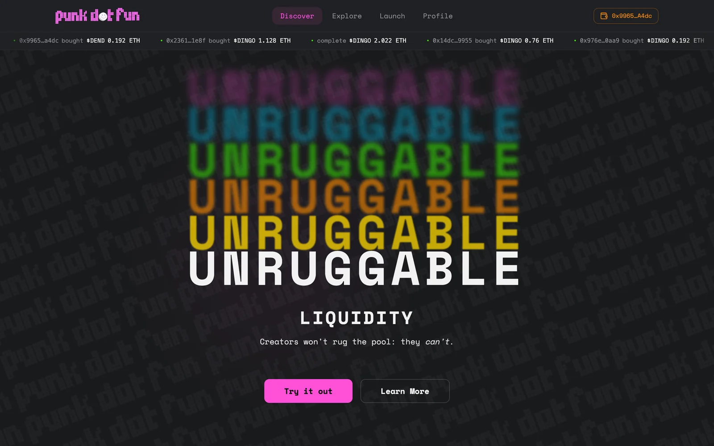

Launch a token. Sell it fairly. Get a market.
punk.fun is a token launchpad. You create a token and sell half of it in a batched auction. If the sale sells out, the money raised seeds a trading pool straight away, so the token is tradeable as soon as it finishes. If it doesn't sell out by its deadline, everyone gets their ETH back. This site explains all of that in plain English, and you don't need to know anything about smart contracts.
How it works
The whole journey from token to live market, start to finish.
Buy in an auction
How the price moves, how to buy, and how to claim or get refunded.
Launch a token
Every setting on the launch form, and what happens after you press the button.
FAQ
Fees, refunds, timing, and where trading opens.
What punk.fun does
Most token launches have the same two problems. Picking a fair starting price is hard, and there's often no real market to trade in once the launch ends. punk.fun handles both in one flow.

- CreateA token is made with a fixed supply of 1 billion. Nobody can mint more.
- AuctionHalf the supply is sold in batches. Buyers commit ETH now and collect their tokens once the sale has sold out.
- FinishEither the sale sells out, and the buy that takes the last token also opens a Uniswap pool, or it reaches its deadline unsold and every buyer takes back exactly what they paid.
You don't have to guess a price and you don't have to build a market afterwards. If enough people buy, the market builds itself. If they don't, nobody is left holding a half-finished launch.

Fun now, Punk soon
Everything on this site is about Fun, the side of punk.fun that's live: quick community and memecoin launches with a token made for you. Punk Soon is the analytical side, with deeper tokenomics and market data, and it's still being built. More on Punk →
Who this is for
People buying in a launch
Start with Buy in an auction, then read The pool at sellout before you buy in a late batch.
People launching a token
Start with Launch a token, then Fees and who gets what.
Buying newly launched tokens is risky. Prices move sharply and there's no guarantee a token holds its value. Trading also opens at roughly the average price paid across the sale, so if you buy in a later, pricier batch you can be below what you paid the moment the pool opens. The pool at sellout explains why.
This documentation explains how the mechanics work. It isn't financial advice. Only commit what you're prepared to lose.